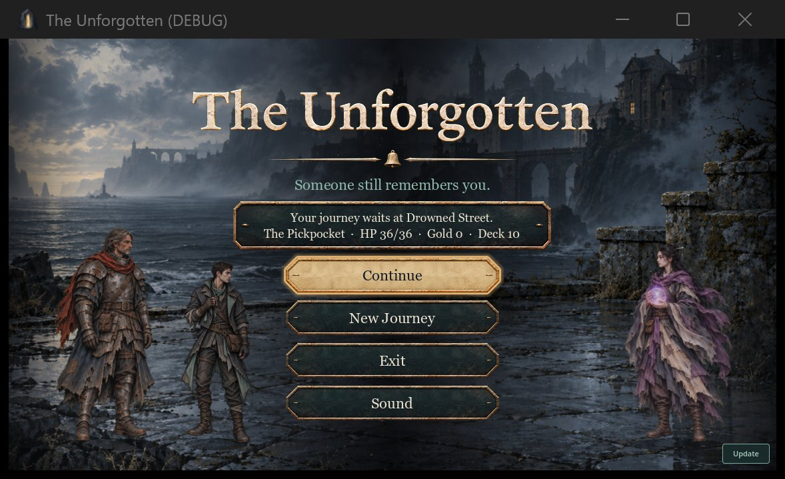
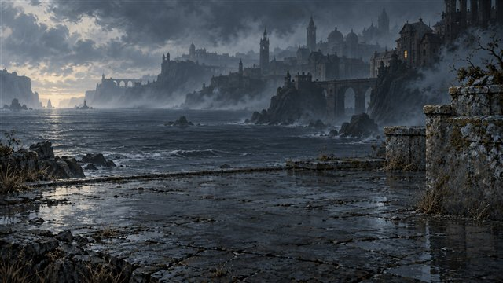
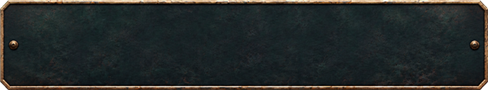
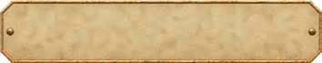
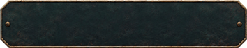
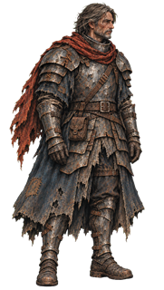
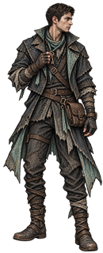
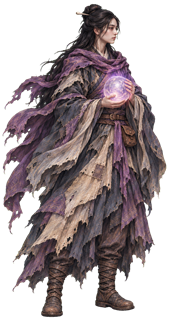

Main menu
The title screen shown on every launch. Full-bleed painting, no frame, with the three classes standing on the quay.









Contents
Title, bell divider and tagline "Someone still remembers you." With a save: the tablet ("Your journey waits at Drowned Street." plus character, HP, gold, deck) and Continue. Then New Journey, Exit and Sound. A small flat Update button sits bottom-right (grey off, teal on, red when a newer version exists).
Layout
Buttons are 320 × 52 plaques, 12 px apart, centred. The three class figures stand at about 13%, 27% and 87% of the width and breathe slowly. Drifting mist and embers run over the painting. The header line only appears when there is a notice, such as a save that could not be read.
Code
run/screens/main_menu_screen.gd, run/menu_scene.gd, run/menu_style.gd (plaque styles, focus ring), run.gd (_show_main_menu).
Open it
The normal launch. In a throwaway profile with no save, only New Journey, Exit and Sound show.